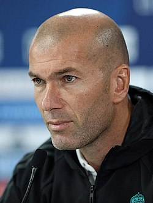

Биография
Зинеди́н Язид Зидан (фр. Zinédine Yazid Zidane, араб. زين الدين زيدان, кабильск. Zineddin Lyazid Zidan; произношение: [zinedin zidan]; род. 23 июня 1972[1][2][3][…], Марсель[4]) — французский футболист и тренер. Считается одним из величайших игроков в истории футбола[5][6][7]. Зидан начал свою карьеру в клубе «Канн» на позиции центрального полузащитника, позже выступал за «Бордо», но клубами, сделавшими француза известным на весь мир, считаются «Ювентус» и «Реал Мадрид», в составе которых француз выиграл двенадцать трофеев. Зидан три раза признавался лучшим футболистом мира (1998, 2000, 2003) и один раз лучшим футболистом Европы (1998). В 2004 году был признан УЕФА лучшим футболистом за последние 50 лет[8]. В 2016 году был признан лучшим французским футболистом в истории по версии France Football. Его переход в «Реал» в 2001 году за 75 млн. евро стал рекордной суммой, заплаченной за одного игрока на тот момент, только лишь через 8 лет, в 2009 году, рекорд Зидана был побит Криштиану Роналду, за трансфер которого заплатили 94 млн евро[9]. С 1994 по 2006 год выступал за сборную Франции, в общей сложности проведя в её составе 108 матчей и забив 31 гол. Вместе со сборной Зидан стал чемпионом мира (1998) и чемпионом Европы (2000). Перед чемпионатом мира 2006, на котором Зидан был капитаном команды и стал лучшим игроком турнира, француз объявил о завершении карьеры игрока после окончания мундиаля. Впоследствии Зидан работал в структуре мадридского «Реала», занимал должности советника президента, спортивного директора, тренера второй команды и ассистента главного тренера[10][11]. В январе 2016 года Зидан был экстренно назначен на пост главного тренера первой команды после отставки Рафаэля Бенитеса[12]. Менее чем за два сезона в качестве тренера главной команды, Зидан выиграл две Лиги чемпионов, Суперкубок УЕФА, клубный чемпионат мира, чемпионат Испании (это чемпионство стало для его клуба первым за 5 лет)[13]. В октябре 2017 года, на церемонии награждения The Best FIFA Football Awards, был признан лучшим тренером мира — за вторую подряд победу в Лиге чемпионов c «Реалом», чего раньше не удавалось никому[14]. В 2018 году Зидан выиграл Лигу чемпионов в 3 раз подряд[15][16]. Через несколько дней после победы француз объявил об уходе из мадридского клуба по собственному желанию[17][18]. Однако в марте 2019 года вернулся в клуб. Считается создателем футбольного финта «марсельская рулетка»[19].
Клубная карьера
- Кан
- Бордо
- Ювентус
- Реал Мадрид
Карьера в сборной
17 августа 1994 года Зидан впервые надел футболку сборной Франции. В товарищеском матче французы проигрывали сборной Чехии — 0:2, когда Эме Жаке решился выпустить на поле 22-летнего футболиста из «Бордо». Всего за две минуты, на 80-й и 82-й минутах матча, Зидан забил два гола и сравнял счёт. В крупных международных турнирах он принял участие в 1996 году в чемпионате Европы в Англии. Тогда сборная Франции дошла до полуфинала, уступив в серии пенальти команде Чехии[35]. Через 2 года на домашнем чемпионате мира во Франции Зизу стал одним из основных игроков сборной. На самом турнире Франция выиграла «золото», а Зидан забил 2 гола головой в финальном матче против сборной Бразилии. Футболка Зидана на ЧЕ-2000 В 2000 году в Бельгии и Нидерландах на чемпионате Европы Зидан вновь был одним из лидеров сборной. Он забил гол в четвертьфинале в ворота испанцев со штрафного, забил «золотой гол» в дополнительном времени с пенальти в полуфинале в ворота сборной Португалии. В финале сборная Франции обыграла команду Италии в дополнительное время 2:1. В 2002 году французам предстояло защищать свой титул чемпионов мира на полях Японии и Южной Кореи. Зидан получил травму перед этим турниром и не смог помочь своей команде в первых двух матчах, которые закончились с неожиданными результатами: поражение от сборной Сенегала — 0:1 и ничья с Уругваем — 0:0. Зидан решил выйти на поле с травмой в решающем матче с датчанами. В итоге Франция уступила 0:2 и заняла последнее место в группе, не забив при этом ни одного мяча[36]. На Евро-2004 в Португалии Зидан в первом же матче группового этапа против англичан забил 2 мяча в добавленное время (со штрафного и с пенальти), благодаря чему французы одержали победу со счётом 2:1, уступая по ходу матча[37][38]. В матче со сборной Хорватии после подачи Зидана мяч в свои ворота срезал защитник балканской команды Игор Тудор, помимо этого Зидан отметился голевым пасом пяткой при розыгрыше углового, итог матча — 2:2. В последнем туре Зидан забил гол в ворота швейцарцев, Франция победила 3:1. В итоге французская сборная вышла из группы с первого места, но в четвертьфинале уступила грекам — будущим победителям турнира[39]. Зидан во время чемпионата мира 2006 года В 2006 году у сборной Франции было большое количество возрастных основных игроков, поэтому её не записывали в фавориты предстоящего турнира[40]. Зидан объявил о том, что покинет большой футбол сразу же после окончания мундиаля[41]. В дни чемпионата Зидану исполнилось 34 года. Франция не очень уверенно начала групповой этап, сыграв вничью с Южной Кореей и Швейцарией[42]. В этих матчах Зидан получил две жёлтых карточки и вынужден был пропустить решающий матч со сборной Того. Франция без своего лидера одержала победу со счётом 2:0 и вышла со второго места в группе в этап плей-офф. Французы обыграли в 1/8 финала одних из фаворитов — сборную Испании 3:1. При счёте 1:1 Виейра забил гол с подачи Зидана. Немногим позже и сам Зидан отличился забитым мячом, обыграв Карлеса Пуйоля и забив гол в ближний угол ворот Икера Касильяса, тем самым лишив испанцев серьёзных шансов на изменение хода встречи[43]. В четвертьфинале был обыгран фаворит мундиаля — сборная Бразилии, которой прочили шестое чемпионское звание. Но гол, забитый Тьерри Анри с подачи Зидана, разрушил все надежды бразильских футболистов и болельщиков[44][45]. В полуфинале Зидан забил победный гол с пенальти в ворота сборной Португалии. Зидан забил с пенальти и в финальном матче против сборной Италии, но тот матч был омрачён его удалением за удар Марко Матерацци. Капитан французской сборной грубо ответил на слова Матерацци, ударив его головой в грудь, после чего был удалён с поля. В серии послематчевых пенальти итальянцы одержали победу. Зидан — четвёртый футболист в истории после бразильцев Пеле, Вава и немца Пауля Брайтнера, кому удавалось забивать в двух финальных матчах чемпионатов мира.

Тренерская карьера
1 июня 2009 года Зидан был назначен помощником президента «Реала» Флорентино Переса, которого активно поддерживал на выборах. 30 мая 2010 года вышел играть в благотворительном матче звёзд «Реала» и «Милана», в котором его клуб выиграл 4:3. 12 ноября 2010 года был повышен в должности, став советником президента клуба.[46] Зидан в качестве тренера мадридского «Реала» В 2011 году 8 июля Зидан стал директором первой команды футбольного клуба «Реал Мадрид», как только эта должность освободилась после ухода Хорхе Вальдано[47]. После этого он поступил в университет французского города Лимож, чтобы получить диплом спортивного менеджера.[48] В сентябре 2012 году он покинул пост спортивного директора[49] и начал тренерскую карьеру в молодёжной академии мадридского «Реала»[50]. После увольнения из «Реала» главного тренера команды Жозе Моуринью летом 2013 года, Зидану снова был предложен пост спортивного директора, от которого он отказался, чтобы работать помощником будущего главного тренера «сливочных»[51] Карло Анчелотти. В начале 2014 года после 2 лет обучения Зидан получил диплом в области спортивного менеджмента[52]. После этого Зидан заявил, что созрел для того, чтобы самому возглавить какую-нибудь команду[53]. 25 июня 2014 года Зинедин Зидан стал главным тренером «Реал Мадрид Кастилья», в которой француз проработал два с половиной года. «Реал Мадрид» 4 января 2016 года Зидан был назначен главным тренером «Реала», сменив на посту Рафаэля Бенитеса. Об этом было объявлено на специальной пресс-конференции президентом клуба Флорентино Пересом[54]. Иско, Тео Эрнандес, Каземиро и Зинедин Зидан (слева направо) на церемонии вручения медалей за победу в Лиге чемпионов 2018 года В первом матче под руководством Зидана «Реал» со счётом 5:0 разгромил «Депортиво»[55]. Под руководством француза игра «сливочных» стабилизировалась и команда смогла вернуться в чемпионскую гонку, победив 2 апреля 2016 года в класико «Барселону» (2:1)[56]. Однако это поражение не помешало каталонцам стать чемпионами, опередив мадридцев на одно очко. Зидан стал первым тренером «Реала» с 2007 года, выигравшим своё первое класико в качестве тренера Реала, тогда это удалось сделать Бернду Шустеру[57]. В первый же сезон Зидану удалось вывести команду в финал Лиги чемпионов, где 29 мая она в серии пенальти одержала победу над «Атлетико Мадрид», также он стал первым французским тренером, выигравшим Лигу чемпионов[58]. 12 января 2017 года «Реал» сыграл вничью с «Севильей» в матче кубка Испании, что позволило клубу под руководством француза установить новый рекорд в Испании: 40 матчей без поражений, обойдя тем самым предыдущего рекордсмена — «Барселону», которая под руководством Луиса Энрике смогла провести без поражений 39 матчей[59][60]. В своём первом полноценном сезоне в качестве тренера Зидан привёл клуб к первой с 2012 года победе в чемпионате Испании, опередив на три очка «Барселону» и вновь вышел в финал Лиги чемпионов, где со счётом 4:1 был обыгран итальянский «Ювентус»[61]. Две победы в Лиге чемпионов сопровождались также победами в Суперкубке УЕФА и на клубном чемпионате мира. За этот период Зидан выиграл 8 из 10 возможных трофеев, повторив рекорд Пепа Гвардиолы за аналогичный период.[62] Новый сезон начался для Зидана с завоевания Суперкубка УЕФА, «Реал» одолел «Манчестер Юнайтед» со счётом 2:1[63]. 26 мая 2018 года «Реал» выиграл Лигу чемпионов в третий раз подряд, а Зидан стал первым специалистом, которому удалось добиться подобного результата. При этом защитить чемпионский титул «сливочные» не сумели. Спустя пять дней, 31 мая Зидан созвал пресс-конференцию, на которой сообщил об уходе с поста тренера «Реала»[17][18][64]. 11 марта 2019 года на сайте мадридского клуба было объявлено о том, что Зидан возвращается на пост главного тренера «сливочных», сменив на этом посту Сантьяго Солари[65][66]. Оставшуюся часть сезона «Реалу» спасти не удалось и команда завершила сезон без трофеев. Однако по итогам следующего сезона Зидан вновь привёл свою команду к чемпионскому титулу, оформив его за тур до конца сезона[67]. 27 мая 2021 года на официальном сайте «Реала» было объявлено, что Зидан решил покинуть свой пост[68].